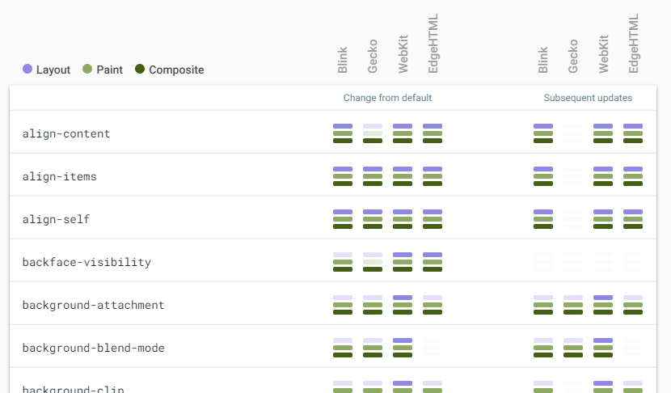

“Chrome only” is not the web.
Pssst, see her awesome youtube channel: Layout Land
<div class="my-element my-element--left">Left element</div>
<div class="my-element my-element--right">Right element</div>
.my-element {
border: none;
display: inline-block;
height: 50px;
margin: 0 0 0 0;
padding: 0 0 0 0;
}
.my-element--left {
background: orange;
width: 45%;
}
.my-element--right {
background: purple;
width: 55%;
}
"Elements" between inline-blocks should have a minimal width. If not specified, the browser applied one (between 2 or 3 pixels)
In our case? The carriage return or the space between our tags ...
<div class="my-element my-element--left">Left element</div><div class="my-element my-element--right">Right element</div>
.my-element {
background-color: orange;
color: white;
height: 100%;
}
The purcentage css unit is based on a context
That means height 100% means we want 100% of the parent height, not the page
html,
body {
height: 100%;
}
.my-element {
background-color: orange;
color: white;
height: 100%;
}
html,
body {
font-size: 1em;
}
.my-element {
font-size: 0.8em;
}
.my-element2 {
font-size: 0.8em;
}
<div class="my-element">
<div>A text to 0.8em</div>
<div class="my-element2">A text to 0.8em? (spoiler: nope, to 0.64)</div>
</div>
<div class="my-element2">A text to 0.8em</div>
When no opacity
<div><!-- 1 -->
<span class="red"><!-- 6 --></span>
</div>
<div><!-- 2 -->
<span class="green"><!-- 4 --><span>
</div>
<div><!-- 3 -->
<span class="blue"><!-- 5 --></span>
</div>
When opacity
<div><!-- 1 -->
<span class="red"><!-- 1.1 --></span>
</div>
<div><!-- 2 -->
<span class="green"><!-- 4 --><span>
</div>
<div><!-- 3 -->
<span class="blue"><!-- 5 --></span>
</div>
So padding-top: 50% does not add 50% of the original height of the element as padding, but 50% of the width of the parent element
There are several exceptions to the margin collapse rules. This is where things can get hard to follow. Following are some visual examples of situations where margins would not collapse. For a more complete understanding, refer to the specs.
See https://jonathan-harrell.com/whats-the-deal-with-margin-collapse and the CSS Box model Spec
| Recommanded | Sometimes | Never | |
|---|---|---|---|
| Screen | rem, em, px, % | ex | pt, cm, mm, in, pc |
| Printer | rem, em, cm, mm, in, pt, pc, % | px, ex |
You want your image has got 250px of width and use too the specified height with keeping ratio?
Use so object-fit
img {
height: 250px;
}
.cover {
width: 250px;
object-fit: cover;
}
Boxes on your webpage have a size, even if you haven’t given them one
See the sizing spec
Per default, a box will always try to take the max content size
However, you could specify that it should take instead the min content or a fit content
.min-content {
width: min-content;
}
.max-content {
width: max-content;
}
The at-rule is a statement that provides CSS with instructions to perform or how to behave.
Always have the following syntax: @[KEYWORD] (RULE);
Define the charset of your file
Place it to the top of the file
@charset "UTF-8";
To import css files between them
Note: in production mode, we will have an http request for each import: try to contatenate instead
@import 'global.css';
This rule is particularly useful for applying CSS to XML HTML (XHTML) so that XHTML elements can be used as selectors in the CSS.
Few use cases now
/* Namespace for XHTML */
@namespace url(http://www.w3.org/1999/xhtml);
Declare your own font!
@font-face {
font-family: "Nunito";
font-style: normal;
font-weight: 200;
src: url("./nunito/nunito-v9-latin-200.eot"); /* IE9 Compat Modes */
src: local("Nunito ExtraLight"), local("Nunito-ExtraLight"),
url("./nunito/nunito-v9-latin-200.eot?#iefix") format("embedded-opentype"), /* IE6-IE8 */ url("./nunito/nunito-v9-latin-200.woff2") format("woff2"), /* Super Modern Browsers */ url("./nunito/nunito-v9-latin-200.woff") format("woff"), /* Modern Browsers */ url("./nunito/nunito-v9-latin-200.ttf") format("truetype"), /* Safari, Android, iOS */ url("./nunito/nunito-v9-latin-200.svg#Nunito") format("svg"); /* Legacy iOS */
}
Define query condition to apply some style
@media only screen
and (min-device-width: 320px)
and (max-device-width: 480px)
and (-webkit-min-device-pixel-ratio: 2) {
.module { width: 100%; }
}
Define a scenario of an animation
@keyframes pulse {
0% {
opacity: 1;
}
100% {
opacity: 0.2;
}
}
.my-element {
animation: pulse linear 1s infinite alternate;
}
Usefull when media is "print" mode
Related pseudo-elements:
@page :first {
margin: 1in;
}
Check if a CSS feature is available
/* Check one supported condition */
@supports (display: flex) {
.module { display: flex; }
}
/* Check multiple conditions */
@supports (display: flex) and (-webkit-appearance: checkbox) {
.module { display: flex; }
}
A change in width requires the browser
A good site to identify them: https://csstriggers.com/
Optimizes animations by letting the browser know which properties and elements are just about to be manipulated, potentially increasing the performance of that particular operation.
Limit the scope of the browser's styles, layout and paint work.
sob sob :'(